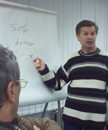

Scurt istoric al fişierului „ro” din XFree86 şi X.Org
Prima mapare românească pentru XFree86 a fost cea scrisă în anul 2000 de Cristian Gafton. Ea doar adăuga mapării implicite „us” cele cinci diacritice româneşti: Ă, Â, Î, Ş şi Ţ în cunoscutele poziţii: AltGr+a, AltGr+q, AltGr+i, AltGr+s, AltGr+t (pentru majuscule se ţine apăsată şi tasta Shift). Precum în alte fişiere xkb existente, s-au utilizat nivelurile trei şi patru ale tastelor A, Q, I, S şi T pentru generarea diacriticelor folosind ca modificator AltGr (tasta Alt din dreapta barei de spaţiu). S-au evitat astfel discordanţele dintre ce este inscripţionat pe tastaturi (care în România sunt într-o proporţie covârşitoare tastaturi US) şi maparea xkb. Acest aranjament, cunoscut şi sub denumirile „ro_us” sau „ro-programmers”, este foarte convenabil pentru cei care nu folosesc intens diacriticele, dar care vor să le aibă disponibile permanent.
Aranjamentul iniţial a fost apoi adaptat în 2001 pentru a funcţiona în XFree86 4.x de către Mişu Moldovan. Acesta a fost şi momentul în care Marius Andreiana a adăugat o variantă „comma” pentru generarea diacriticelor cu virgulă dedesubt, precum cele din standardul ISO-8859-16. În 2003 însă, Manfred Pohler a creat un aranjament asemenea celui din Windows şi l-a propus în XFree86 Bugzilla pentru a înlocui fişierul xkb „ro” existent. Ivan Pascal, dezvoltatorul responsabil, a inclus aranjamentul său ca mapare implicită în fişierul xkb „ro” alături de celelalte existente deja. Mai multe detalii în bug-ul 300 din XFree86 Bugzilla. În prezent (octombrie 2005), acest aranjament tip Windows este încă cel implicit în ultimele versiuni X: XFree86 4.5 şi X.Org 6.8.2. Unele noi distribuţii Linux utilizează XKeyboardConfig, un proiect ce îşi propune să unifice configurările de tastatură din sistemele X Window free/opensource şi comerciale. Acest proiect include din septembrie 2005 echivalentul versiunii 1.2 a aranjamentului disponibil în secţiunea Files a acestui proiect.
Standardul românesc de tastatură
Primul standard oficial pentru o tastatură românească a fost SR-13392 din anul 1998, care nu a fost implementat în nici un sistem de operare. Există însă un driver „third-party” pentru sistemele Windows care implementează această mapare, disponibil pe site-ul Institutului de Memorie Culturală. În paralel au existat mai multe încercări de definire a unor noi aranjamente, mai ergonomice şi pe cât posibil compatibile cu modelele US ale tastaturilor de pe piaţa românească. Cele mai stăruitoare eforturi i-au aparţinut lui Cristian Secară, care a constatat existenţa a două categorii distincte de utilizatori de diacritice. Unii erau obişnuiţi cu poziţia diacriticelor din maparea românească de la Microsoft, dar erau nemulţumiţi de neajunsurile sale (inversarea tastelor Y şi Z, remaparea caracterelor @#$%^&*()-_=+). Alţii, de regulă utilizatori de Linux sau programatori, nu doreau ca diacriticele să fie mapate în contradicţie cu ce e inscripţionat pe tastaturile US.
Din iniţiativa lui Cristi Secară, în perioada iulie 2003 - iulie 2004 au avut loc cinci întruniri la care au participat specialişti din partea mai multor instituţii publice (ASRO, CIMEC, Universitatea Bucureşti), firme private (Microsoft, IBM) şi comunităţi de utilizatori (Windows, MacOS, Linux). În urma dezbaterilor pe marginea propunerilor iniţiatorului a rezultat un nou standard românesc de tastatură, ce a fost înaintat Asociaţiei de Standardizare din România pentru omologare. În cursul lunii decembrie 2004 acesta a fost adoptat cu numărul SR 13392:2004. (În imaginea din dreapta, Dan Matei, directorul Institutului de Memorie Culturală, la a treia întrunire pe tema unui nou standard de tastatură românească, ce a avut loc în data de 25 noiembrie 2003 la sediul Institutului Bancar Român).
 Noul standard de tastatură cuprinde două aranjamente: unul primar derivat din cel prezent în Windows, dar în format QWERTY, fără să schimbe caracterele de pe nivelul doi al tastelor numerice, şi unul secundar, derivat din cel original din XFree86, cu diacriticele pe nivelurile trei şi patru ale tastelor A, Q, I, S şi T. Ambele aranjamente mapează noul caracter Euro „€” pe nivelul trei al tastei E (se va utiliza combinaţia AltGr+E) şi includ ca taste moarte (cu roşu în imaginile alăturate) toate accentele necesare generării diacriticelor specifice limbilor celor mai importante minorităţi de pe teritoriul României: maghiară, germană, turcă, polonă, sârbo-croată, alte limbi slave cu grafie latină. Cred că acelaşi lucru se poate spune şi despre limba romanes vorbită în România, dar informaţiile disponibile nu sunt întrutotul relevante.
Noul standard de tastatură cuprinde două aranjamente: unul primar derivat din cel prezent în Windows, dar în format QWERTY, fără să schimbe caracterele de pe nivelul doi al tastelor numerice, şi unul secundar, derivat din cel original din XFree86, cu diacriticele pe nivelurile trei şi patru ale tastelor A, Q, I, S şi T. Ambele aranjamente mapează noul caracter Euro „€” pe nivelul trei al tastei E (se va utiliza combinaţia AltGr+E) şi includ ca taste moarte (cu roşu în imaginile alăturate) toate accentele necesare generării diacriticelor specifice limbilor celor mai importante minorităţi de pe teritoriul României: maghiară, germană, turcă, polonă, sârbo-croată, alte limbi slave cu grafie latină. Cred că acelaşi lucru se poate spune şi despre limba romanes vorbită în România, dar informaţiile disponibile nu sunt întrutotul relevante.
Noua implementare pentru X.Org şi XFree86
Odată cu definitivarea noului standard a devenit necesară implementarea celor două mapări româneşti de tastatură din standardul SR 13992:2004 în X.Org şi XFree86. La fel ca în Windows, din motive de compatibilitate trebuia păstrat şi aranjamentul de tip QWERTZ implementat de Martin Poehler în 2003. Însă mai exista o problemă majoră, cea a diacriticelor din ISO-8859-16, adică Ş şi Ţ cu virgulă dedesubt. Din motive de compatibilitate cu platforma Windows (mai multe detalii în acest articol scris de Cristi Secară), nu s-a putut evita înlocuirea Ş-urilor şi Ţ-urilor din ISO-8859-16 cu cele din ISO-8859-2 în noua mapare xkb, adoptându-se acelaşi compromis ca în cazul driver-ului de Windows ce implementează noul standard disponibil la secarica.ro. În plus au mai trebuit create două variante ce implementează diacriticele din standardul ISO-8859-16 pentru cele două mapări din noul standard. În concluzie, aranjamentele rezultate sunt:
- implicit este aranjamentul secundar din noul standard, cu diacriticele pe literele AQIST, se setează cu comanda: setxkbmap ro . Acest aranjament are o variantă secundară, numită comma ce generează diacritice cu virgulă dedesubt şi se iniţializează cu comanda: setxkbmap ro comma
- std este aranjamentul primar din standard, cu diacriticele în dreapta, dar în format QWERTY, se setează cu: setxkbmap ro std. Varianta secundară a acestuia este aranjamentul academic ce generează diacritice cu virgulă dedesubt şi se iniţializează cu: setxkbmap ro academic
- winkeys este aranjamentul nemodificat al lui Martin Poehler, identic cu cel QWERTZ din Windows, cu diacritice în dreapta şi caractere @#$%^&*()-_=+) remapate, a se utiliza comanda: setxkbmap ro ms .
Observaţie: În versiunea 1.1, denumirile ultimelor trei variante erau: standard, ideal şi ms, schimbarea numelor s-a făcut odată cu acceptarea noii implementări în proiectul XKeyboardConfig, mai multe detalii în Bugzilla freedesktop.org.
Instalarea manuală a noii mapări
Deoarece noul fişier xkb nu a fost inclus încă în X.Org şi XFree86, pentru a utiliza noilor aranjamente trebuie să le instalaţi manual. Fişierele necesare pot fi descărcate din secţiunea Files a proiectului „Diacritice”. Cele două fişiere incluse trebuie despachetate în locaţiile prinse în structura arhivei. Faceţi o copie de rezervă a celor două fişiere /etc/X11/xkb/symbols/ro şi /etc/X11/xkb/symbols/pc/ro înainte de a le suprascrie cu cele descărcate. Pentru a putea genera toate diacriticele posibile, utilizaţi setări locale UTF-8. Notă: Există un mic bug în implementarea tastelor moarte în GTK+ 2.x care împiedică generarea caracterelor ţ şi Ţ utilizând tasta moartă „dead_cedilla” de pe tasta „=”, mai multe detalii în GNOME Bugzilla.
Distribuţiile ce utilizează XKeyboardConfig 0.6 sau mai vechi (Ubuntu 5.10, *SuSE 10 etc.) includ o versiune a fişierului „ro” ce nu conţine aranjamentele din noul standard. Pentru o instalare manuală, descărcaţi din CVS-ul proiectului versiunea echivalentă celei disponibile aici şi suprascrieţi fişierul /etc/X11/xkb/symbols/ro (după ce aţi făcut o copie de backup).
Alte observaţii
Această pagină se referă deocamdată doar la mapările de tastatură pentru XFree86 şi X.Org, neglijând deocamdată alte mapări cum ar fi de exemplu cele pentru consola Linux. A se vedea alte articole interesante pe această temă pe site-ul Linux-KDE România şi pe site-ul personal al lui Mugurel Ciobîcă.